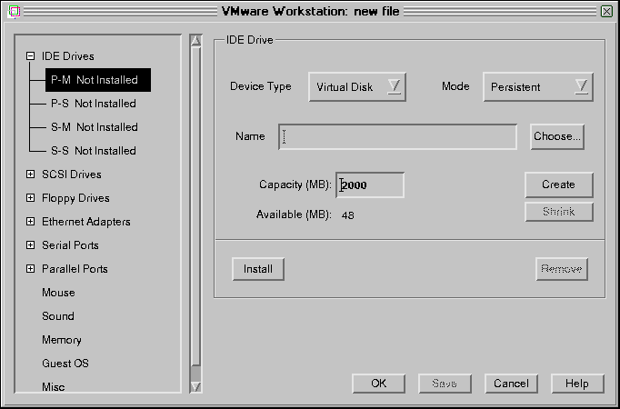

|
|
18. Система виртуальных машин фирмы VMWare
(продолжение:
Конфигурирование виртуальной
машины) |
18.6. Конфигурирование виртуальной машины
Мастер конфигурации позволяет
Вам легко создать виртуальную машину, но если Вы хотите подойти к процессу
создания ВМ более осознанно, то запустите Редактор конфигурации. Для этого надо
запустить систему VMWare и, увидев окно, изображенное на рис. 18.2, выбрать
пункт "Run the Configuration Editor". Впрочем, редактор конфигурации можно
запускать и для того, чтобы скорректировать конфигурацию, созданную Вами ранее.
Для этого надо воспользоваться пунктом "Configuration Editor" в меню "Settings"
системы VMWare. После запуска Вы увидите следующее окно:
Рис. 18.43. Первое окно редактора
конфигурации
Мы с Вами рассмотрим процесс создания с помощью редактора конфигурации
новой виртуальной машины. Я думаю, что после этого Вам не составит труда
изменить уже существующую конфигурацию.
Итак, начинаем по частям собирать виртуальный компьютер. Первым делом
подключим жесткий IDE-диск. Для этого щелкните по значку + рядом с надписью "IDE
Devices". После того, как появятся 4 дополнительных строки, соответствующих 4-м
каналам контроллера жестких дисков, щелкните по строке с надписью "P-M. Not
installed". Эта строка обозначает жесткий диск на первом канале (Primery Master)
и утверждает, что таковой не установлен. Надо иметь в виду, что нельзя
устанавливать второй диск (так называемый Slave), если не установлен первый диск
(Master) на соответствующем канале контроллера (P-S не устанавливают до P-M, а
S-S, соответственно, до S-M). Если не соблюсти это правило, то виртуальная
машина не сможет загружаться с заданного таким образом диска. Обычно используют
первую позицию, P-M (primary master), для подключения жесткого диска и третью
позицию, S-M (secondary master), для диска CD-ROM.
В правой части окна появляются поля ввода для задания параметров
подключаемого диска:

Рис. 18.44.
Возле надписи "Device Type" находится выпадающий список выбора типа диска.
Имеются следующие возможности: виртуальный диск, плоский диск (plain disk),
реальный диск (raw disk) и CD-ROM. Чтобы увидеть их, щелкните по треугольному
значку в прямоугольнике возле надписи "Device Type". Суть этих терминов такова:
Виртуальный диск (Virtual disk) - это файл в файловой системе
базового компьютера, который для операционной системы виртуальной машины
выглядит как реальный физический диск. Этот файл может располагаться как на
диске базового компьютера, так и на удаленной файловой системе. Если Вы создаете
виртуальную машину с виртуальным жестким диском, Вы можете установить на нее
новую операционную систему без переразбиения физического диска и даже без
перезагрузки базового компьютера.
Плоский диск (plain disk) подобен
виртуальному, но может иметь размеры более 2GB. Он компонуется из нескольких
файлов, называемых экстентами (extents, в дословном переводе - пространствами).
Размер каждого extent-а ограничен 2-мя гигабайтами. В отличие от виртуальных
дисков при создании плоского диска все отводимое под такой диск пространство
сразу занимается и заполняется нулями.
Реальный диск (Raw disk) - это
жесткий диск или раздел жесткого диска базового компьютера (не файл в файловой
системе), к которому получает прямой доступ виртуальная машина. При подключении
такого диска становится возможным загрузить в виртуальной машине операционную
систему, ранее установленную в один из разделов базового компьютера (при
условии, что раздел этот находится на локальном IDE или SCSI диске).
Рассмотрим вначале процесс подключения виртуального диска, а процедуры
подключения дисков других типов разберем чуть позже.
После выбора типа диска надо задать режим работы данного диска. Это делается
с помощью списка выбора "Mode", который состоит из трех вариантов: persistent,
nonpersisten, undouble.
Режим "с записью" ("Persistent") В этом
режиме все операции записи на диск, осуществляемые программным обеспечением,
работающим на виртуальной машине, немедленно производятся на реальный диск (или
в файл, моделирующий реальный диск). Режим может использоваться со всеми типами
дисков. В результате диски, работающие в режиме "persistent", ведут себя подобно
обычным дискам на реальном компьютере.
Режим "без записи"
("Nonpersistent") Все операции записи на диск, осуществляемые виртуальным
компьютером, выглядят как операции записи на реальный диск, но фактически запись
данных на физический диск не производится и данные теряются по завершении сессии
работы на виртуальном компьютере (то есть когда "выключается питание"
виртуального компьютера или производится перезагрузка ОС). Такой режим удобен
для случаев, когда Вы хотите запускать виртуальный компьютер из одного и того же
состояния. Это бывает необходимо, например, при тестировании разрабатываемого
или для демонстраций нового ПО. В этом режиме могут работать все типы дисков.
В режиме "Nonpersistent" VMware только читает с реального диска. Операции
записи в течение сессии фактически производятся во временный файл (redo log
file), который уничтожается при завершении сессии (при перезагрузке или
выключении ВМ). Все блоки данных, которые были модифицированы и записаны в файл
.REDO, при повторном обращении к ним считываются уже из этого файла, а не с
реального диска. По завершении сессии файл уничтожается.
Файл redo
располагается в том же каталоге, где по умолчанию располагаются файлы
виртуальных дисков. Однако его местоположение можно изменить, воспользовавшись
пунктом "Misc" в меню редактора конфигурации (в левой части окна, смотри
рисунки).
Режим "с отложенной записью" ("Undoable") Этот режим очень
похож на режим "без записи" в том смысле, что все операции записи на диск,
осуществляемые виртуальным компьютером, фактически производятся во временный
файл (.REDO) на реальном диске. Но, в отличие от предыдущего режима, когда
отключается питание виртуального компьютера, пользователю предлагается на выбор
три возможности: (1) записать все изменения на реальный диск; (2) отказаться от
изменений, возвращая диск к его исходному состоянию; или (3) запомнить
изменения, чтобы в следующей сессии начать работу с того состояния, в котором
закончена работа в предыдущем сеансе (сохранить redo-файл). Примеры
использования этого режима: когда надо поэкспериментировать с установкой нового
ПО или выполнением некоторых административных функций, что может вызвать
проблемы в работе компьютера.
Если Вы сохраните файл redo, то при следующем
запуске ВМ Вам будет предложено либо восстановить все изменения, сделанные в
ходе предыдущей сессии, либо отказаться от них (начать работу заново, как в
режиме "без записи"), либо отключить ВМ.
Любые типы дисков могут
использоваться в режиме "undoable".
В поле "Name" введите имя файла, которое будет использоваться для данного
виртуального диска. В качестве имен файлов допускаются только цифровые
комбинации. Предварительно воспользуйтесь клавишей "Choose" для выбора каталога,
в котором будет сохранен файл, моделирующий виртуальный диск.
В строке ввода "Capacity" введите размер виртуального диска. Можно
использовать предлагаемое по умолчанию значение (Вам предлагается установить в
качестве первого жесткого диска виртуальный диск объемом 2000 МБ.) Ниже показано
количество свободного места на реальном диске. Значение, которое Вы введете в
этом поле, представляет собой максимальное значение объема виртуального диска.
Первоначально виртуальный диск занимает на реальном диске менее 1 МБ, но размер
файла возрастает при установке программного обеспечения на виртуальную машину.
После того, как введете все перечисленные параметры, щелкните по экранной
клавише "Create". Если Вы выбрали в качестве режима работы виртуального диска
значение "Undoable" ("с отложенной записью") и хотите хранить файл REDO
виртуальной машины в каталоге, отличном от того, в котором хранится файл
виртуального диска, Вам надо будет ввести имя этого другого каталога в строке
ввода, которую Вы увидите, если перейдете в пункт "Misc" в левой части окна.
После задания всех параметров виртуального диска щелкните по экранной клавише
"Install". После этого строка, соответствующая диску Primary Master в левой
части окна изменяется на "P-M Virtual disk".
Рис. 18.45. Первый диск
установлен
Это означает, что Вы установили (смонтировали) жесткий диск в Ваш виртуальный
компьютер. Если Вы вздумаете удалить (отключить) этот диск, щелкните по клавише
"Remove".
Установка CD-ROM еще проще, чем жесткого диска. Тут надо задать только один
параметр - имя устройства. Можно еще определить, подключать ли CD-ROM
автоматически при запуске виртуальной машины, после чего щелкаем по клавише
"Install".
Рис. 18.46. Установка
CD-ROM
SCSI-диски устанавливаются вполне аналогично IDE-дискам.
Рис. 18.47. Установка
SCSI-дисков
Далее подключаем дисковод для гибких дисков. Для этого щелкаем по значку +
рядом с надписью "Floppy Drives" в левой части окна. Открывается две строки,
соответствующие двум (как у обычного компьютера) возможным дисководам.
Рис. 18.48. Подключение
floppy-дисковода
В качестве типа дисковода можно выбрать (в правой части окна) либо устройство
(Device) или файл (File). Далее нужно задать или выбрать имя устройства
(например, /dev/fd0 or /dev/fd1) и определить, будет ли дисковод подключаться
автоматически. После этого остается только щелкнуть по клавише "Install"
Необходимо иметь в виду, что физический floppy-дисковод не может
использоваться одновременно операционными системами двух (и более) виртуальных
машин или виртуальным и реальным компьютером. Вы должны решить, какому
компьютеру Вы дадите доступ к дисководу. В процессе работы с виртуальной машиной
можно в любой момент отключить дисковод, воспользовавшись пунктом "Devices"
главного меню. И, наоборот, можно подключить дисковод через тот же пункт меню,
освободив его предварительно в других ВМ и в базовом компьютере. На базовом
компьютере для этого надо размонтировать диск (в Линукс) или переключиться на
какие-то каталоги других дисков во всех запущенных программах (если на базовом
компьютере запущена Windows).
На следующем этапе устанавливаем сетевую карту, а точнее, вид подключения к
локальной сети.
Рис. 18.49. Подключение к локальной
сети
Здесь также предлагается список для выбора одного из трех возможных режимов
подключения. Объяснение этих режимов было дано в подразделе "Создание Вашей первой
виртуальной машины", так что повторяться здесь не будем.
Далее подключаем последовательные и параллельные порты. Я тут молча
соглашался с установками, предлагаемыми по умолчанию:
Рис. 18.50. Подключение
последовательного порта
Рис. 18.51. Подключение параллельного
порта
Подключаем мышь (у меня PS/2, я и выбирал соответствующий вариант):
Рис. 18.52. Подключение
мыши
Подключаем звуковую плату (тоже не могу дать развернутых рекомендаций, может
быть со временем дополню):
Рис. 18.53. Подключение звуковой
платы
Далее необходимо выделить виртуальной машине оперативную память. Система
VMware позволяет пользователям задавать как объем оперативной памяти, выделяемой
каждому виртуальному компьютеру, так и общее количество ОП, зарезервированное
для использования виртуальными машинами. Правильная настройка этих параметров
очень важна, поскольку может существенно повлиять на производительность как
виртуального компьютера, так и системы в целом. Количество памяти, выделяемое
всем виртуальным машинам, задается через меню "Settings" VMWare. О том,
как это сделать, будет рассказано в специальных пояснениях по использованию
памяти. При работе с редактором конфигурации Вы можете определить только второй
параметр - количество ОП, выделенной данной виртуальной машине (естественно, в
пределах количества памяти, зарезервированной для всех ВМ). Из приводимого ниже
рисунка видно, что у меня на компьютере всего-то 64 МБ ОЗУ, так что я просто
поделил оперативную память пополам между виртуальным и базовым компьютером.
Рис. 18.54. Выделение
памяти
Остается только выбрать операционную систему:
Рис. 18.55. Выбор операционной
системы
и задать значения некоторых дополнительных параметров:
Рис. 18.56. Задание дополнительных
параметров
Для первого раза проще всего согласиться с тем вариантом, который задается по
умолчанию. Единственный из этих дополнительных параметров, значение которого
нужно ввести, это путь к файлу .redo, и то только в том случае, когда Вы
хотите использовать режим работы "с отложенной записью" (см. выше).
После того, как Вы создадите таким образом виртуальную машину, необходимо
сохранить созданную конфигурацию, для чего щелкнуть по экранной клавише "Save".
Появится окно:
Рис. 18.57. Сохранение конфигурации
виртуальной машины
в котором надо выбрать каталог и ввести имя конфигурационного файла.
Если на созданный таким образом виртуальный компьютер еще не установлена ОС,
можно перейти к процедуре
установки ОС.


{kind=link}
{kind=link}
{kind=link}
{kind=link}
{kind=link}
{kind=link}
{kind=link}
{kind=link}
{kind=link}
{kind=link}
{kind=link}
{kind=link}
{kind=link}
{kind=link}